GTR is a dense-prediction framework built on a pure gated-linear-attention backbone — every global token-mixing block is GLA, with no softmax attention interleaved. A detection-specialized DINOv3 teacher is distilled into it in one stage, reaching 58.4 box AP on COCO below 2 ms, transferring directly to segmentation, pose and oriented detection, and scaling to 16K-resolution inputs where windowed-attention detectors run out of memory.
Vision foundation models such as DINOv3 provide strong dense representations, but quadratic self-attention limits high-resolution inference. Existing linear-time backbones often recover accuracy by reintroducing softmax-attention layers, compromising their efficiency advantage. GTR asks whether a purely recurrent vision backbone can avoid this trade-off. With DINOv3 distillation, 2D-aware token scanning, and a hardware-efficient GLA kernel, GTR achieves accurate and practical dense prediction without softmax attention in any global token-mixing block. The same backbone transfers directly across object detection, instance segmentation, human pose estimation, and oriented detection.
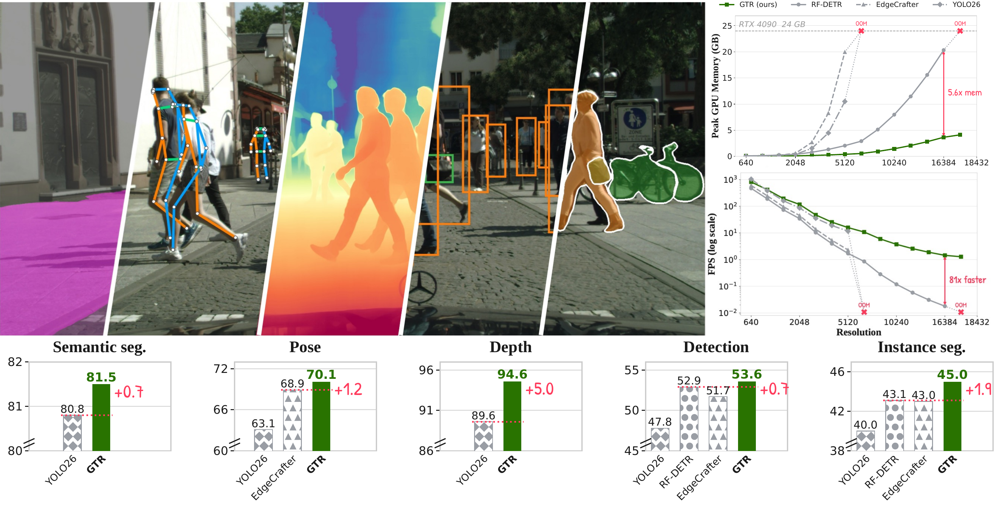
High-resolution scalability and a superior accuracy–efficiency trade-off. On an RTX 4090, GTR-S scales to far higher input resolutions than RF-DETR-S and EdgeCrafter-S — 5.6× less memory and an 81× throughput advantage at 16,384-pixel inputs — while establishing a better box-AP-vs-latency Pareto frontier on COCO (up to 1.5× speedup at comparable accuracy).
All 116 models below — detection, instance segmentation, human pose and oriented detection — were re-measured under one unified protocol: FP16, batch size one, single RTX 4090, compiled forward path, post-processing included for models that need it. Hover any point for details, switch task, or filter by model scale — GTR variants (green squares) sit on the upper-left frontier in every group. Exact numbers are in the results tables.
GTR is a DETR-like detector with three components: a 12-layer pure gated-linear-attention (GLA) backbone — every global token-mixing block is GLA, with no softmax-attention layer interleaved — that replaces quadratic self-attention with a data-dependent recurrent state, a lightweight three-scale projector that fuses features tapped from blocks 4/8/12 into a stride-8/16/32 pyramid, and a query-based detection decoder with grouped-query training. Consecutive blocks scan the patch grid left→right, right→left, top→bottom, and bottom→top, so information propagates globally in all four directions without any window partitioning.
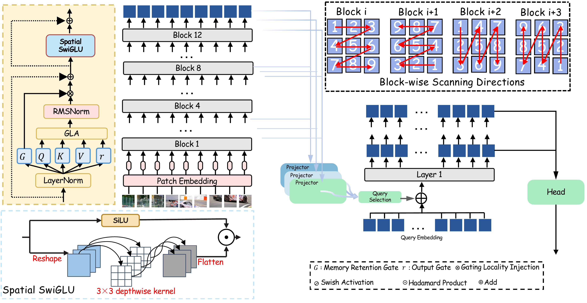
Overview of GTR.
Before distillation, a generic DINOv3 is first specialized for detection following the EdgeCrafter (ECDet) paradigm, then frozen. During distillation the teacher processes the complete image while the GLA student receives masked patches (mask ratio 0.5). The objective combines three complementary signals:
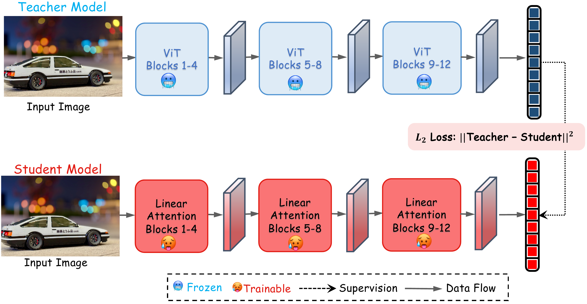
Masked DINOv3 representation distillation.
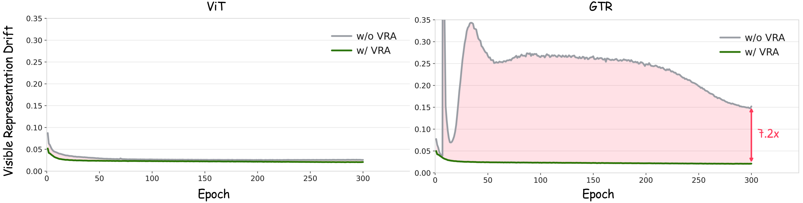
Why VRA matters.
Four-direction recurrence changes what the network sees. At Stage 1 (block 3), GTR-S already has global effective-receptive-field support: every location of a 1024×1024 input contributes, and the smallest square containing 99% of the gradient mass spans 1,017 px. RF-DETR-S, whose first three blocks use windowed attention, is confined to a single 512×512 window — exactly 25% of the image — until global attention begins at block 4.
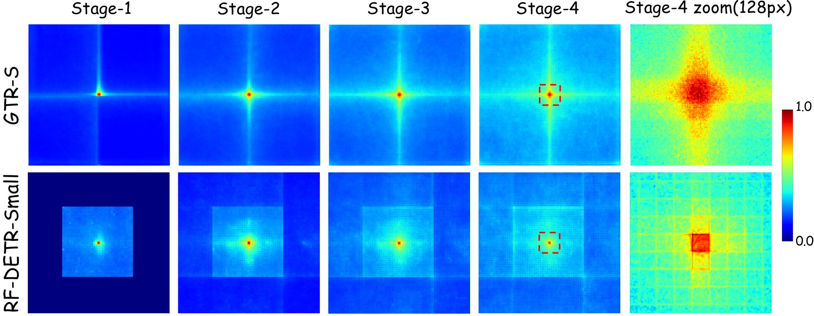
Stage-wise effective receptive fields.
Chunkwise GLA evaluates the exact recurrence $\mathbf{S}_t=\mathrm{Diag}(\boldsymbol{\gamma}_t)\,\mathbf{S}_{t-1}+\boldsymbol{k}_t^\top\boldsymbol{v}_t,\; \boldsymbol{o}_t=\mathrm{scale}\,\boldsymbol{q}_t\mathbf{S}_t$ by splitting the sequence into chunks of 64 tokens. The official FLA schedule performs an expensive matrix contraction while traversing chunks serially; GTR's inference-only operator instead computes all per-chunk summaries in parallel across the chunk–head grid and keeps only a lightweight, coalesced scan for boundary states. Fixed-shape FP16 kernels ($C{=}64$, $d_k{=}32$, $d_v{=}64$) fuse the cumulative sums, run the heavy products on tensor cores, and hold the causal tile in shared memory — exposing full GPU parallelism even at batch size one.
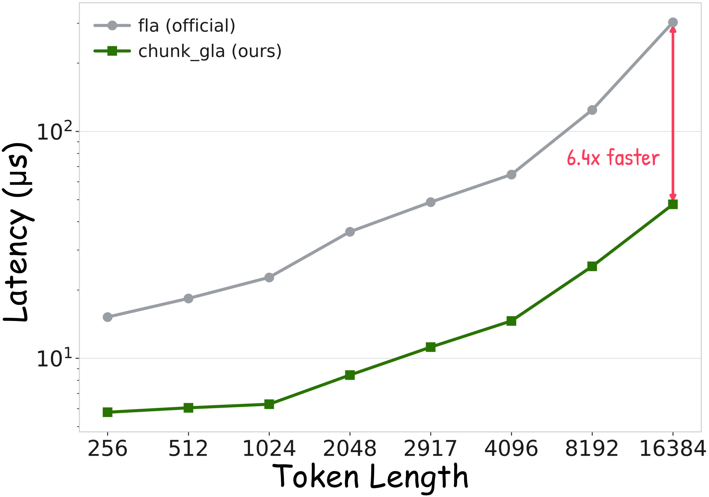
Core-operator latency, log scale (lower is better)
Measured under an identical FP16 + CUDA Graph protocol. The gap widens with sequence length — precisely where quadratic attention becomes unusable.
The same distilled backbone serves four dense-prediction tasks. Detection: GTR-M ranks first in AP, AP75, APS and APM in its group; GTR-L is first in latency and five of six AP metrics; GTR-X reaches 58.4 AP as the fastest extra-large model. Instance segmentation: first in mask AP in all four scale groups. Human pose: first in keypoint AP in all four groups. Oriented detection on DOTA-v1.0: 80.9 AP50 — +1.1 AP over Oriented-DETR (Swin-T) at 4.1× lower latency. Each tab below pairs the full comparison table with qualitative results; the best value per column within each group carries a green dot, GTR rows are highlighted.
COCO val2017 box AP. Latency: minimum per-image time, FP16, batch 1, RTX 4090 (compilation and warm-up excluded; NMS included where required). Epochs marked * add a no-strong-augmentation phase; "—" indicates undisclosed schedules. GTR uses 30 COCO epochs after Objects365 pre-training (50 for GTR-X). Best per column within each scale group is marked with a green dot.
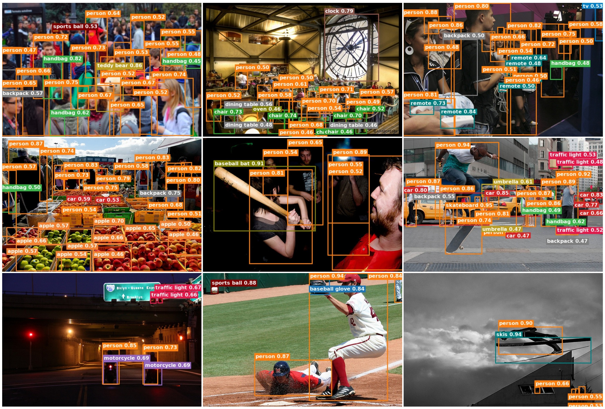
COCO val2017 qualitative results. Dense scenes, small objects, heavy occlusion and night-time scenes.
COCO val2017 mask AP; same latency protocol as the detection table. † — pre-trained on Objects365 with SAM2-generated pseudo-masks (35× the COCO box count) before COCO fine-tuning; GTR uses neither. Non-latency baseline entries are taken from EdgeCrafter. Best per column within each scale group is marked with a green dot.
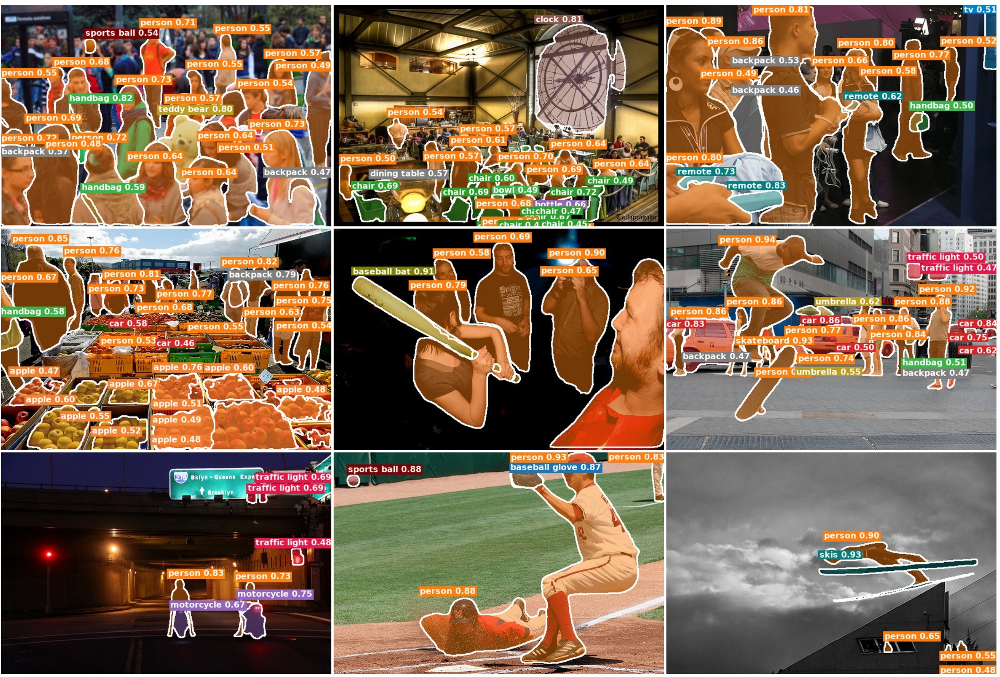
COCO instance segmentation. GTR-X is both the fastest and the most accurate X-scale model (2.253 ms, 1.36× faster than RF-DETR-Seg-X).
COCO val2017 keypoint metrics; same latency protocol as the detection table. † — pre-trained with additional Objects365 supervision; GTR does not. "—" — not reported. Non-latency baseline entries are taken from EdgeCrafter. Best per column within each scale group is marked with a green dot.
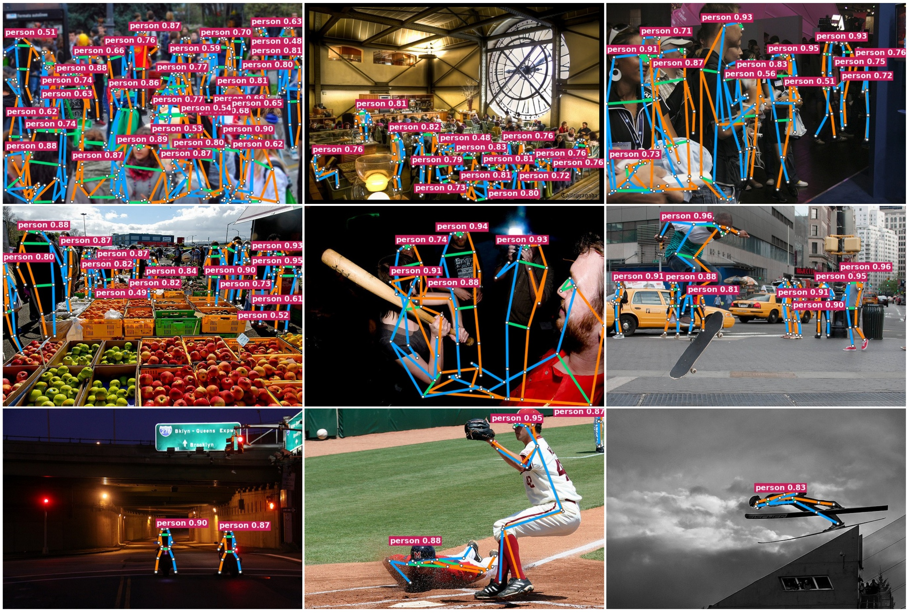
COCO human pose estimation. The distilled representation transfers directly to keypoint prediction.
Overall AP50 on the DOTA-v1.0 test set; same latency protocol as the detection table. Non-latency baseline entries are taken from RiO-DETR, which is itself omitted because no public implementation was available to time. Best per column within each detector family is marked with a green dot.
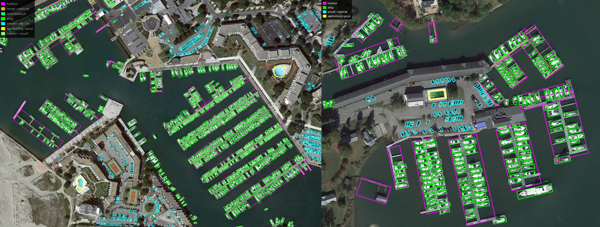
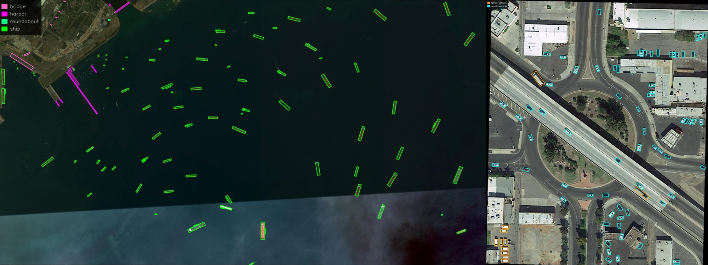
DOTA-v1.0 oriented detection. Dense aerial layouts with arbitrary object orientation — a hard localization stress test for a recurrent backbone.
Linear complexity is only useful if the extra spatial detail is actually exploited. Sweeping GTR-S from 640×640 to 1024×1024 — same 30-epoch recipe throughout — accuracy improves monotonically from 52.73 to 55.26 AP, with the largest gain on small objects (APS 35.06 → 40.61). GTR does not merely tolerate larger inputs; it converts them into accuracy.
GTR-S on COCO val2017, 30 epochs at every resolution. The 640×640 row is the baseline used in all other tables on this page. Best value per accuracy column is marked with a green dot.
Distilling GTR-S and training directly on COCO (no Objects365): masked prediction alone leaves 2.9 AP on the table. VRA and Gram supervision are complementary — one constrains where the student looks, the other how its tokens relate.
The mask ratio is robust: anything in 0.3–0.7 stays within 0.3 AP of the best (51.9 at ratio 0.5). Objects365 detector pre-training then adds +0.8 AP (51.9 → 52.7 for GTR-S), with the largest gain on small objects (APS 33.5 → 35.6).
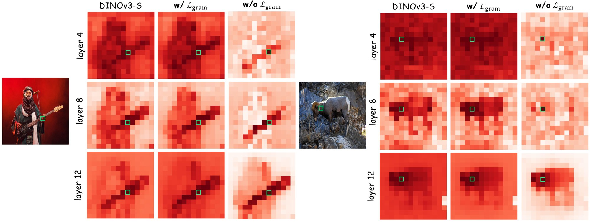
Token-affinity rows at blocks 4/8/12.
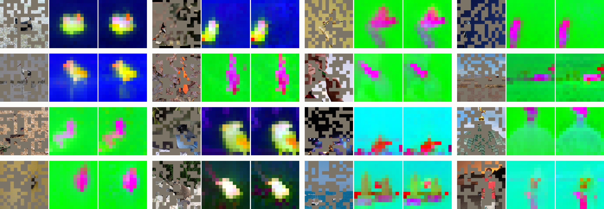
Masked input (left) → teacher response (middle) → distilled GLA student (right).
If you find GTR useful, please consider citing:
@inproceedings{gtr2026,
title = {{GTR}: Gated Token Recurrence for Efficient Object Detection at Any Resolution},
author = {},
booktitle = {},
year = {2026}
}